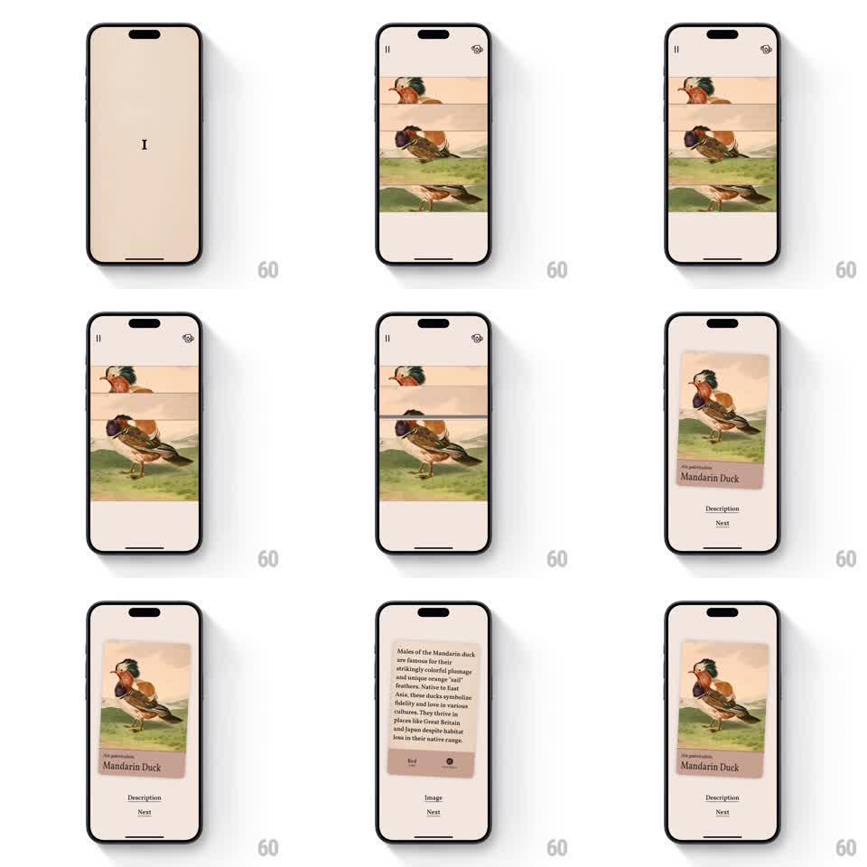

Media
Frame-by-frame

Rebuild this interaction 1:1: Art of Fauna's slice puzzle - a vintage bird illustration is cut into 3 horizontal strips, misaligned horizontally; drag each strip sideways to align them, and the solved image merges into a card that flips to reveal species details.

Rebuild this interaction 1:1: Art of Fauna's slice puzzle - a vintage bird illustration is cut into 3 horizontal strips, misaligned horizontally; drag each strip sideways to align them, and the solved image merges into a card that flips to reveal species details.
## Integration
Integration: stack-agnostic spec - springs given as stiffness/damping, timed motions as duration + curve; map every value to your framework and animation library of choice.
## Scene
Warm beige screen: pause and hint icons top, the puzzle stage (3 full-width image strips with thin divider gaps, each offset horizontally), a level intro card ("I") beforehand. Solved state: the unified illustration framed as a card with "Mandarin Duck" name plate and "Description / Next" links; flip side shows the description paragraph with "Image / Next" tabs.
## Motion spec
Pattern: drag-to-align puzzle -> card flip, continuous + 800ms reveal.
- Each strip drags horizontally 1:1 with the finger, clamped to +-40% of screen width, with a soft elastic resistance at the bounds.
- When a strip's offset enters the snap window (+-12px from aligned), it magnetizes to 0 (spring ~500/30, 150ms) with a light haptic.
- All 3 aligned: strips merge - divider gaps close (150ms) and the image settles as one card with a soft shadow (300ms).
- The name plate and links fade in under the card (300ms, staggered 100ms).
- Card tap: flips on Y (rotateY 0 -> 180deg, 600ms, ease-in-out) to the description side; another tap flips back.
## Calibration
- The snap window is forgiving (12px) - pixel-hunting alignment ruins the delight.
- Strips keep their image registration while dragging; only translateX moves, never scale or skew.
## Reduced motion
Strips slide to aligned positions on a single tap each; card crossfades instead of flipping.
## Don't miss
- The merge (gaps closing) is the payoff frame - it must read as one image clicking together, not three strips fading.
- The flip is a true 3D half-turn around the card's vertical center, not a horizontal slide swap.